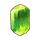
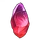
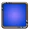
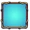

Soulstones are a type of hero equipment and individual to each hero. You get soulstones from celestial chests which are obtained by performing rituals in the Oracle. Soulstones unlock at character level 200.
Tiers
There are 2 tiers of soulstones. While tier 1 is immediately available once you get a new hero, tier 2 has to be unlocked first.
| Tier | Soulstones | Unlock cost | Requirement |
|---|---|---|---|
| 1 | Focus, Stamina, Courage | ||
| 2 | Wisdom, Faith, Charisma | 10,800 soulstone power and oracle level 11 |
Bonuses
Soulstones give the following bonuses:
| Soulstone | Bonus | |
|---|---|---|
| Focus | Increase the damage of this hero | |
 |
Stamina | Increase the health of this hero |
| Courage | Increase the armour of this hero | |
| Wisdom | Increase your gold earnings (raining gold) | |
 |
Faith | Increase your firestone gain (firestone finder) |
| Charisma | Increase all main attributes on all heroes | |
{kind=link}
{kind=link}
{kind=link}
{kind=link}
{kind=link}
{kind=link}
Rarities
There are 7 rarities. Each rarity approximately triples the effect of the soulstone and allows you to enchant the soulstone two more times.
| Rarity | Color | Max level | Requirement |
|---|---|---|---|
| Common | 2 | ||
| Uncommon | 4 | ||
| Rare |  |
6 | |
| Epic | 8 | ||
| Legendary | 10 | Legendary seal and level 6* | |
| Mythic |  |
12 | Mythic seal and level 9* |
| Titan | 14 | Titan seal and level 11 | |
| Angel | 16 | Angel seal and level 13 |
{kind=link}
{kind=link}
{kind=link}
{kind=link}
{kind=link}
{kind=link}
{kind=link}
{kind=link}
* galaxy chests and stellar chests can also directly drop new legendary or mythic soulstones which then have level 0
Enchanting
When you enchant an item, it is actually the slot that you enchant. So whenever you get a better item, the enchantment level will carry over to the newly improved item. The cost doubles with every enchantment level until level 8. After that the cost will go up by 50% per level until level 12. For levels 13 and 14 the cost doubles again.
For levels 2-8: cost = 30 * 2current level * 4(tier-1)
For levels 9-12: cost = 3840 * 1.5(current level - 7) * 4(tier-1)
For levels 13-14: cost = 19460 * 2(current level - 11) * 4(tier-1)
| Upgrade | Tier 1 | Tier 2 |
|---|---|---|
| 0 → 1 | 30 | 120 |
| 1 → 2 | 60 | 240 |
| 2 → 3 | 120 | 480 |
| 3 → 4 | 240 | 960 |
| 4 → 5 | 480 | 1,920 |
| 5 → 6 | 960 | 3,840 |
| 6 → 7 | 1,920 | 7,680 |
| 7 → 8 | 3,840 | 15,360 |
| 8 → 9 | 5,760 | 23,040 |
| 9 → 10 | 8,640 | 34,560 |
| 10 → 11 | 12,960 | 51,840 |
| 11 → 12 | 19,440 | 77,760 |
| 12 → 13 | 38,880 | 155,520 |
| 13 → 14 | 77,760 | 311,040 |
| 14 → 15 | 116,640 | 466,560 |
| 15 → 16 | 174,960 | 699,840 |
Effect
The effect of a soulstone roughly triples with its rarity and roughly doubles with its enchanting level. The exact rarity multipliers are:
| Rarity | Tier 1 | Wisdom | Faith | Charisma |
|---|---|---|---|---|
| Common | 4 | 2.5 | 2 | 8.5 |
| Uncommon | 10 | 5.5 | 4 | 23.5 |
| Rare | 28 | 15 | 10 | 68.5 |
| Epic | 88 | 42 | 28 | 203.5 |
| Legendary | 244 | 123 | 82 | 608.5 |
| Mythic | 730 | 366 | 244 | 1823.5 |
| Titan | 2188 | 1095 | 730 | 5468.5 |
| Angel | 6562 | 3282 | 2188 | 16403.5 |
The exact enchantment level multipliers are:
| Level | 1 | 2 | 3 | 4 | 5 | 6 | 7 | 8 |
|---|---|---|---|---|---|---|---|---|
| Multiplier | 2 | 4 | 8 | 15 | 30 | 60 | 120 | 250 |
| Level | 9 | 10 | 11 | 12 | 13 | 14 | 15 | 16 |
| Multiplier | 500 | 1000 | 2000 | 4000 | 8000 | 16000 | 32000 | 64000 |
With these multipliers, the effect of a soulstone is:
effect = (rarity multiplier * level multiplier - 1) * 100%
Power
The soulstone power of a hero is given by 100 plus the sum of the power ratings of the hero's soulstones. The base power of a tier 1/2 soulstone is 100/250. The power of a soulstone doubles with every level increase and triples with every rarity increase:
soulstone power = base power * 2level * 3(rarity - 1)
Duplicates
When you open a celestial chest, you draw either a new soulstone, a rarity upgrade or a duplicate. When you draw a duplicate soulstone, you will get soul shards instead which in turn allows you to enchant soulstones. The amount of soul shards you get depends on the rarity and tier of the soulstone. A common tier 1 soulstone gives 10 soul shards. You get 3 times as many shards with every rarity higher and 2 times as many shards for every tier higher.
value = 10 * 2(tier - 1) * 3(rarity - 1)
| Rarity | Tier 1 | Tier 2 |
|---|---|---|
| Common | 10 | 20 |
| Uncommon | 30 | 60 |
| Rare | 90 | 180 |
| Epic | 270 | 540 |
| ... | ... | ... |